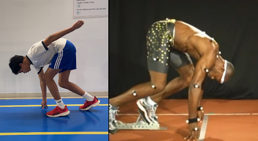
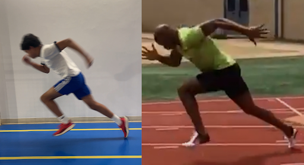
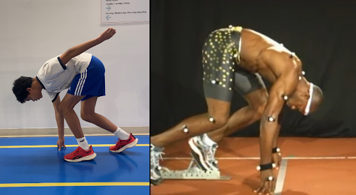
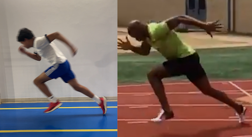

1.0: START
 



1.1: Reassurance
Let me get something straight with you as a mindset shift before I start teaching you how to execute a block start effectively,
this is something to keep in mind for the rest of the website.
The blocks are important, but it’s not everything⁽¹⁾.
The same goes for anything else in the 100m, top speed, top speed maintenance/endurance, your late acceleration, whatever,
that’s because every part (or phase) in the 100m is built off of the last one, they’re not entirely different things on their own.
For example, if top speed requires relaxation otherwise your form will get messed up, that doesn’t mean your start doesn’t need it,
it’s just more dominant in the top speed phase.
Meaning, just because you did some top speed training the other day, you can still get faster in the start phase indirectly.
Why?
Because your neuromuscular efficiency improves.
Simply, your nervous system’s (your brain being the center, which is why the name central nervous system comes up a lot) ability to effectively fire the right muscles,
so you can maximize your force application and basically optimize every metric in sprinting.
Say you’re trying to lift a heavy weight,
With high neuromuscular efficiency, your nervous system can fire the right muscles all at the same time and with the right effort, making it easier to execute said task⁽²⁾.
Sprinting is a highly mental game⁽³⁾, keeping this locked in is critical for quality sessions instead of going through the motions,
…and the best part?
It is highly trainable⁽⁴⁾.
truly unleashing your maximum potential.
And remember, everything here is traditional, experimentation to find what works for YOU is HIGHLY recommended.
1.2: Block start
The block start is actually simpler than some people make it seem.
If you know what a four or three-point start looks like (2 feet and both hands on floor is 4-point, 2 feet and 1 hand on floor is three-point),
it’s basically that, but with pads.
The block starts are super structured, even though they look complicated and everyone has their own way of doing them⁽⁵⁾.
BUT, it can be broken down into this order:
- The set-up of the blocks
- “On your marks” position
- “Set” position
- Push-off (when the gun fires)
but that doesn’t change the main purpose.
The set-up: You hear everyone say, 2 feet on the front, 3 on the back.
What does it actually look like?
From the starting line on the track, count 2 foot-lengths (heel touches the start line).
That’s where the front pad goes, at the end of your foot.
Then, count another foot-length from the front pad or just count three foot-lengths from the starting line.
That’s where the back pad goes.
Once you get more advanced, you can start using your fingers to get more precise measures once you find what’s best for you.
Whichever foot goes front or back depends on what you’re most comfortable with.
And if you wanna figure that out…
Stand straight, then fall forwards,
Whichever foot you catch yourself with is generally the foot that goes in front⁽⁶⁾.
“On your marks” position: Much simpler than the set-up of the blocks.
The action is you simply just get into the blocks.
Once you get into the blocks, this is what should be in your position:
- Hands just behind the start line, around shoulder-width apart
- Hands are NOT flat
- Your shoulders should be perpendicular or leaning over your hands
- Knee of the back leg should be resting on the track
- Pushing into the pads
- Feel tension running from the arm through the shoulders
What should I do? Get up using your hips.
Here’s what should be there:
- Still pushing into the pads
- Hips slightly higher than shoulders
- Weight must be forward
- Back leg roughly 120 degrees
- Front leg roughly 90 degrees
“You should feel ready to explode off at any moment.”
…gets your technique most of the way there.
The push-off: This is the moment you’re going to PUSH off your front foot as hard as you can.
The back foot?
Pull it to the front to take the next step as fast and as low as possible.
You should have:
- Triple-extension (front leg extends fully)
- Body leaves track low, around 45 degrees in most cases
- Head and neck stay neutral and relaxed, not facing too down or too up
- The opposite of your front leg has your arm swinging forward aggressively
- Back foot snaps forward and stays low
- Shin angles at roughly the same angle as your body/torso
“You should feel like you’re trying to push the earth behind you, NOT just taking a step.”
What about the first step?
In the general sense:
You do the same thing as the push-off but your arms are slightly tighter because there's less ground to pull your back leg from step 1 to 2, compared to the push-off to step 1.
1.3: Importance
Now for the important part, why?
Why do we do all of these specific things that people tell us to do?
What’s the science behind this that led us to coaches teaching this?
Here’s the fun part, because the absolute core idea of why we do this stuff for a block start actually connects to Newton’s First Law of Motion.
In fact, most of the “why” in sprinting ties a lot to basic physics.
If you don’t know what it is, it says:
“An object in motion will stay in motion, while an object at rest will stay at rest unless acted upon by an external force.”
The “unless acted upon” part?
That’s the key.
The primary goal is to overcome your inertia as quickly as possible in order to start moving⁽⁷⁾.
The secondary goal? The primary goal is used to set you up for the rest of the race.
With that in mind, every specific element in your start makes complete sense.
Take low shin angles.
Sounds confusing at first on why we do it, right?
But if you break it down, the fastest way from point A to point B is obviously a straight line, which is what low shin angles are trying to achieve.
And when I say fastest, that means the fastest way to overcome inertia, which ties back into the primary goal.
That’s why some good sprinters toe drag in their starts,
it is a byproduct (something you wouldn’t consciously pay attention to) of low-shin angles and a good start in general, not the cause of low-shin angles.
You can apply the primary goal to any specific start mechanic.
Take triple-extension as another example.
Sounds like it has no correlation to the primary goal.
But the triple-extension actually happens because you’re trying to push off of the front leg as long as possible,
while the back leg is trying to move from point A to point B (the next step).
And that maximizes your force application as quickly as possible
BOOM, now it ties back into the primary goal.
One thing to keep in mind is that the triple-extension is not a byproduct because unlike the toe drag,
you don’t actually care if toe-drag is happening or not as long as your shin angles stay low, but if there is no triple-extension…
That tells you that you are not finishing the push, which is something to fix.
You can attempt to see if you can connect the primary goal cleanly to every element mentioned in the sprint start.
But now, it’s time to really ingrain this idea into your brain.
1.4: Analysis
Now we can take your new understanding of the sprint start and apply it in order to analyse an angle of my sprinting start.
While comparing it to an elite sprinter known as Asafa Powell⁽⁸⁾.
We’ll be analysing both the start position and the first step.
Start position
I’m going to ask you first, what do you notice?
Well, one thing for certain is that Powell is using a block start, while I’m on a 3-point start.
But, since you know about our primary goal, you now understand that it’s still trying to achieve the same outcome, even if the mechanics are slightly different.
So, what’s actually different here?
Not much, if you’re looking at the image as a whole and not at the details.
If you really focus on the specifics, you’ll notice:
My arm is a little bit too far up, it could be a little bit lower to be closer to my body so it can move faster right away,
that can delay the pull of the back leg.
My head could also be a bit more neutral and relaxed compared to Powell’s, his is more “resting”.
The real difference is in the shin angles.
Powell’s shins are visibly much lower and ready to project forwards at any moment,
while mine, especially in the front foot, is much more vertical, meaning it takes longer to get moving right away.
That also makes the rest of my body pop up way faster, because the force is going up, not ideal for our secondary goal,
once again, that delays the time to apply horizontal force
Remember, we need to be able to push off at any moment.
His hips are also a little bit higher than his shoulders,
my hips are more in-line with my shoulders, which also makes me pop-up way sooner, not supporting a low torso angle.
Taking those into consideration, what could I do better?
That’s to put my legs into a better position to push harder, and lower, while also making the hips support a low torso angle.
Which overcomes inertia way faster, THAT’s what we want.
The start position is not supposed to be comfortable, it’s supposed to make you fast.
This one is me and Powell on the first step.
Let me ask again, do you spot any differences?
You can’t immediately see it from the image, but the intent of the two are way different.
I’m trying to move fast right away, not push hard
Powell actually looks like he’s striking with the foot and pushing harder, which is what actually overcomes inertia.
You can also see the secondary goal from the start position really come into play.
Based on that, because my hips from last time were in-line with my shoulders instead of slightly higher,
Combined with my shin angles pointing upwards and not forwards?
Now you can see how my torso is higher than Powell’s, but most importantly…
My low torso angle is forced, not natural.
And that distracts the fact that the purpose of the low torso is there to help you control the direction of that push,
if I’m too focused on trying to stay low…
Then there’s no point in staying low in the first place.
My knee also is lower than Powell’s, he has intent to strike down and produce force.
My leg looks like it’s just letting the foot land.
The foot itself is also not dorsiflexed (it’s supposed to look like the foot is pointing forwards, not down) enough.
And that’s a huge difference in both speed and strength.
1.5: Application
Now you might be wondering: “How can I apply what I just learned into my training?”
This is where it shifts: knowing what to do is easy, actually doing it is hard.
You might be unmotivated now, even disappointed because you’ve probably heard that a thousand times.
The statement is true.
BUT, it goes way deeper than that, and I can hopefully reignite your drive.
The exercises that I’m about to tell you (and for the rest of the website) are not ultra-rare gatekept exercise that only the elites do,
in fact, they probably do most of these exercises already.
What’s different is that I’m not just giving you the exercises anymore,
you know where they’re coming from.
You have the mental cues, science, and even analysis.
That knowledge turns every exercise done with good quality and intention, not just going through the motions.
THAT’S why this is maximizing your speed potential.
The exercises/drills that obviously (and you might already do in your training) improve your start are:
- Falling starts (teaches low torso and shin angle)
- Sled sprints (train overcoming inertia by producing more force)
- Hamstring curls (so you don’t crumble in the middle of acceleration)
- Hill sprints (higher knee drive and more torso angles)
- Heavy plyos (apply high force faster)
I recommend you don’t even do these kinds of exercises yet.
What?
Yeah, when you’re at this kind of age, your body is at its peak growth phase (sometimes called a superplastic state)⁽⁹⁾, if you try these exercises and train the wrong movements.
Or worse, get injured.
Your brain will make it stick with you way harder in the future than if you were already grown.
Which is a pain to get out of.
At that age, what you should be focusing on is training to be able to do those reps properly in the first place instead of after some bad habit developed.
That means doing exercises that are mostly low-risk, bodyweight, and support your body so you don’t fall apart.
- Push-ups (arm drive, core control)
- Plank and side plank (even more core control)
- Glute bridges (activates the glutes)
- Lunges (single-leg strength)
- Joint health (stretching and mobilizing)
- Reactive plyometrics (like pogo hops or squat jumps)
They build the foundation of all strength work going forward.
The best part? Building the foundation still makes you faster, as you naturally improve your form and don’t waste force as easily.
Because without a foundation, what’s going to happen to the force you put into the ground?
It becomes meaningless.
Combined with the fact that when you actually do those high-impact exercises?
You will absolutely pop off in speed gains.
Because you cleared the path to where now nothing (like injuries) can get in your way.
Remember, if you don’t want to do it now, you will have to do it in the future anyway, with regret.
Trust that it will get shorter from here, as the start is the most complicated (because the website just started and it needs to stay easy).
Now it’s time for your drive phase.